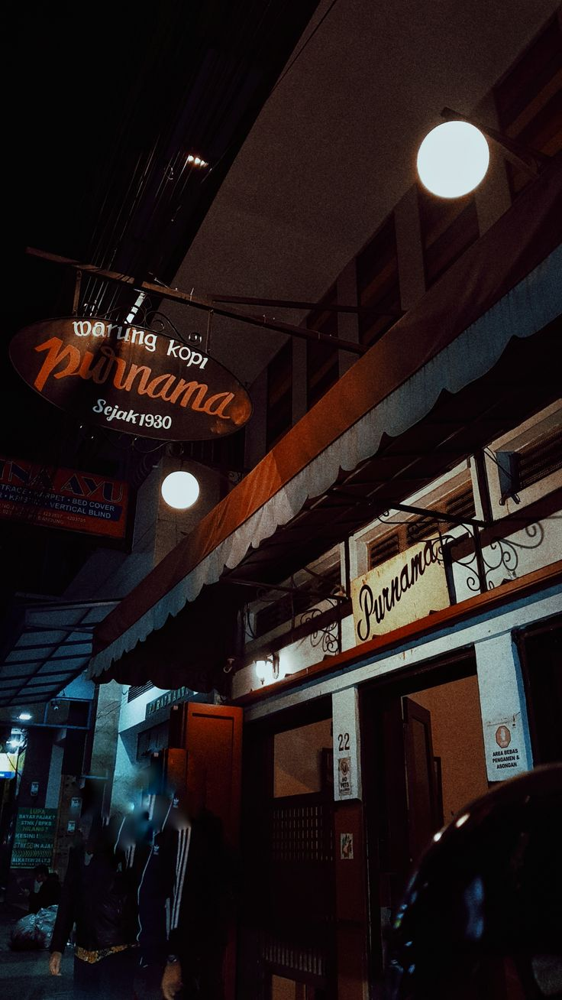

Warung Kopi Purnama
Sejak 1930
Kopitiam Sejak 1930 · Braga, Bandung
Secangkir kopi hangat, roti srikaya buatan keluarga, dan empat generasi cerita di Jl. Alkateri No. 22.
Warung ini dirintis pada 1930 dan kini dijalankan generasi keempat keluarga pendirinya. Namanya berarti "kedai bulan purnama", dipakai sejak pertengahan 1960-an.
Meja kayu, dinding penuh foto lama, dan suasana nostalgia Belanda-Tionghoa menemani kopi yang diseduh dengan biji Kopi Aroma dan selai srikaya resep keluarga.
Kedai dirintis oleh sang pendiri, cikal bakal Warung Kopi Purnama.
Nama berganti menjadi Warung Kopi Purnama, "kedai bulan purnama".
Selai srikaya resep keluarga jadi andalan, dipasangkan dengan kopi hangat.
Dijalankan generasi keempat dan tetap ramai di Braga.
📍 Jl. Alkateri No. 22, Braga, Sumur Bandung, Kota Bandung
🕐 Setiap hari, sekitar 06.30–22.00 WIB (jam dapat berubah, cek langsung)
🥖 Dekat Alun-alun Bandung dan kawasan Braga
Buka di Google Maps